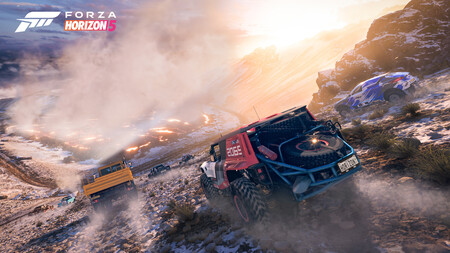
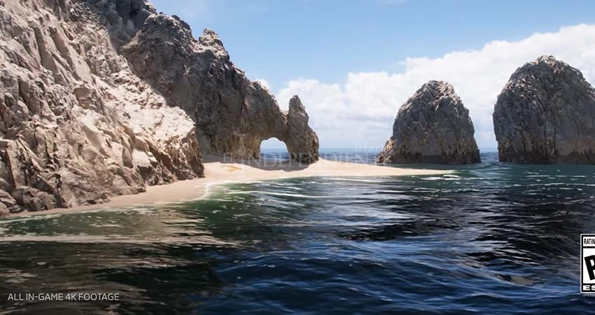
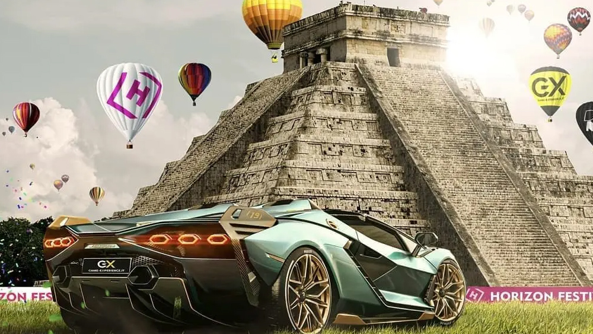
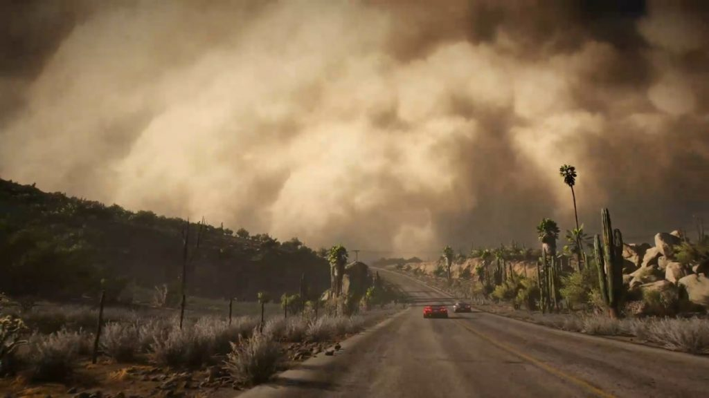

volcan
el volcan se enuentra en lo mas alto de una montaña el cual dependiendo de la temprada primavera invierno verano o otoño cambie su estado de activo a inactivo

LOS CABOS
un hermoso lugar a la orilla del mar el cual puede ser recorrido en los diferentes autos que ofrece MEXICO

podemos encontrar diferentes piramides por ejemplo las de tulum, tenochtitlan entre otras

Desierto
tambien podemos recorrer el desierto de mexico con tormentas de arena interactivas.